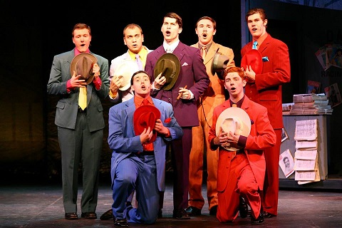
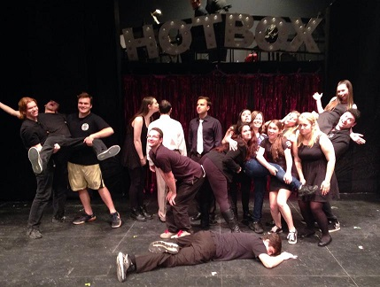

"Luck Be a Lady"
Synopsis
Guys and Dolls is a 1920s NYC setting musical with music and lyrics by Frank Loesser and book by Jo Swerling and Abe Burrows. The show includes card games, missionary meetings, nightclub dancing, and a bunch of hilarious characters. The show saw a a 1955 film adaptation starring Marlon Brando, Jean Simmons, Frank Sinatra, and Vivian Blaine.
Songs include: "Sit Down, You're Rockin' the Boat", "Luck Be a Lady", and "A Bushel and a Peck"
SJU
The SJU Theatre Company performed Guys & Dolls in the spring of 2014. This was something totally new to us, for we were used to much more modern shows. Overall we had a blast with the costumes and props and really liked the experience.
Fun Fact
